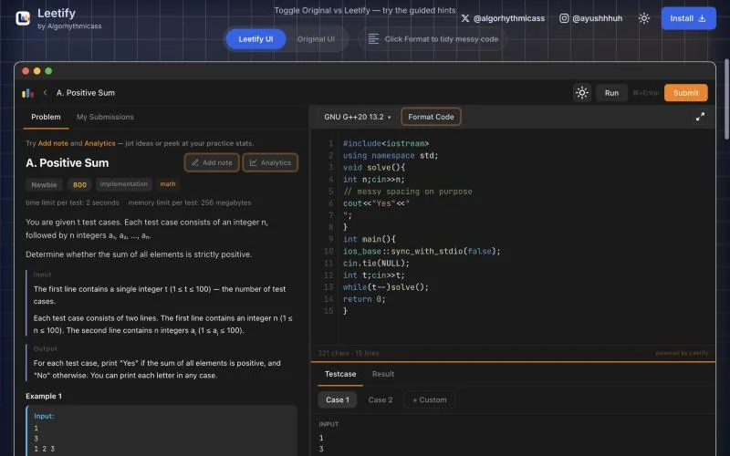
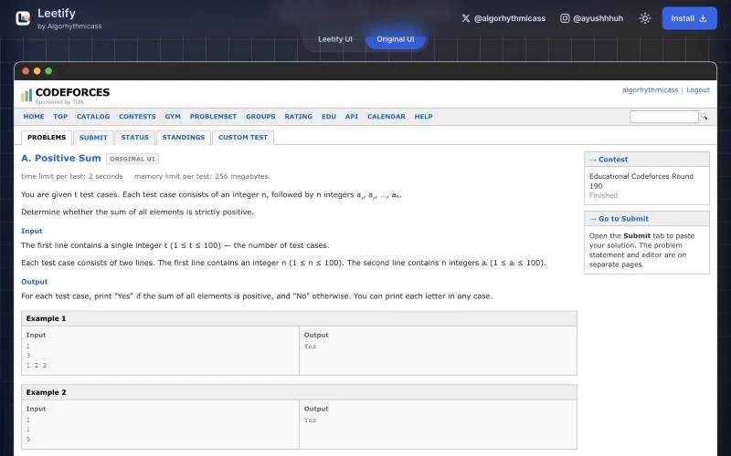
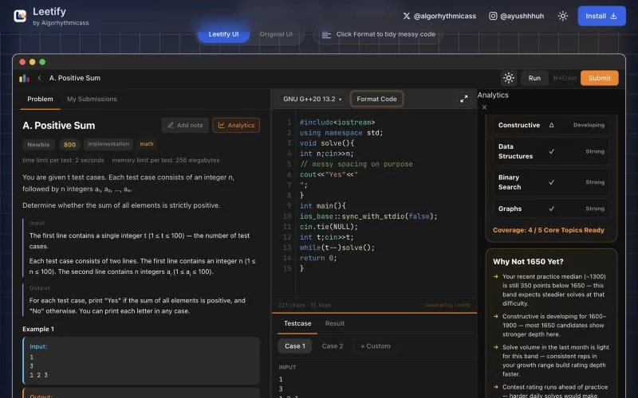

Case study · Product
Leetify: redesigning the flow, not the site.
Leetify turns a Codeforces problem into one LeetCode-style workspace: statement, editor, tests and submit on a single page. I designed, built and launched it on my own, and it grew to 20,000 users.
- Users
- 20,000 on the Chrome Web Store, rated 4.3 out of 5
- Growth
- About 1,000 users from community posts, then 20,000 after a creator’s unpaid reel
- My role
- Product design, engineering and launch, solo
- Platform
- Chrome extension and landing page. Free, no account needed

The problem: five tabs for one problem
A usual Codeforces solve keeps five tabs open for a single problem. The statement and the submit form sit on separate pages, so you can’t read and code at the same time.
The code itself lives in VS Code, notes live in Notion or a notebook, and verdicts land on yet another submissions page. In a timed contest, every switch costs seconds and focus.
I compete on Codeforces myself, so I felt this every round. The goal was to fit the whole solve, from reading to accepted, on one page.

Before: the statement page. The editor is somewhere else.The principle: redesign the flow, not the site
Codeforces is loved for being open, simple and minimal, so I didn’t redesign it. I reshaped only the part where the friction lived: reading, coding, testing and submitting.
Three rules guided every decision:
- Respect the original. Keep what people already like about Codeforces.
- One page, one flow. Merge the steps people juggle into a single workspace.
- Function over style. Every change has to remove a step. Style is subjective; friction isn’t.
Key decisions
Make it familiar on purpose
Most competitive programmers already know LeetCode’s workspace: statement on the left, editor on the right, tests below. So Leetify borrows that layout instead of inventing a new one.
The name does the same job. “Leetify” reads as LeetCode-style, for Codeforces. People understood it before installing, had nothing new to learn, and could explain it in one sentence.
Put the whole solve on one page
The statement and a VS Code-style editor sit side by side in resizable panes. You run the samples inline, add your own tests, format messy code in one click, see verdicts in the editor and submit without leaving.
Help people improve, not just solve
In competitive programming, progress lives in the observations: a trick, a mistake, a DP transition. So notes attach to the problem itself, and My Notes finds them again by text, problem, contest, rating or tag.
The analytics follow the same idea. Instead of only counting streaks, the training panel explains the gap to your next rating milestone, from practice level to weak topics to volume, then suggests problems that close it.

Leave out what adds friction
There’s no account and no sign-up. Install it, open a problem, and it works.
Shipping what users asked for
Leetify ships in small versions, shaped by what users ask for. The latest went out in August 2026.
The biggest features weren’t in the first release. They came from requests, in roughly this order:
- “Make the coding panel behave like a real editor.” The panel became a VS Code-style editor: syntax highlighting, the shortcuts people already use, resizable panes and one-click formatting for messy code.
- “Let me start from my own template.” Starter templates for C, C++, Java and Python now load with each problem, so nobody types the same boilerplate twice.
- “I want to keep notes on problems.” My Notes: notes attach to the problem, can be pinned, and are searchable by text, problem, contest, rating or tag.
- “Show me how I’m doing.” The analytics panel: solve streaks, an activity heatmap, difficulty distribution and the suggested next difficulty, with the reasons spelled out.
Version 0.1.8 shows the kind of detail daily users notice:
- Problem statements render math properly, so constraints read at a glance.
- Sample inputs and outputs keep their line breaks, so multi-line cases match the original.
- C, C++, Java and Python open with starter templates.
- The status bar shows your real cursor line and column, instead of a stuck counter.
Launch and growth: from 1,000 users to 20,000
The first thousand came from showing up where competitive programmers already talk: blog posts on Codeforces, posts on LinkedIn and comments on Instagram coding posts. No ads.
Then a coding creator, hannin.dev, made a reel about Leetify on her own because she liked it. This is where the name and the familiar layout paid off: anyone who knew LeetCode got the idea in seconds, which is exactly what a reel needs. That took it from about 1,000 users to 20,000.
Results
Leetify has 20,000 users and a 4.3 out of 5 rating on the Chrome Web Store, about twenty times its user base before the reel.
What I learned
- Familiar beats novel. Borrowing a layout people already knew made Leetify easy to adopt and easy to explain.
- Restraint is a feature. People didn’t want a new Codeforces, just the one they had without the tab juggling.
- Distribution is half the product. The first users came from going where programmers already were. The jump came from an idea simple enough for someone else to share.